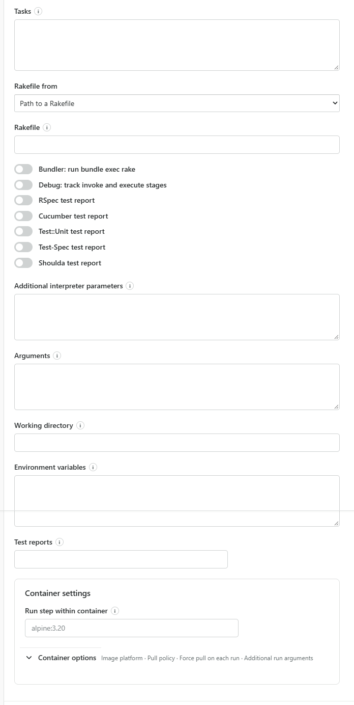

Rake
Runs rake with tasks, a Rakefile and arguments.
When to use it
Use it for Ruby tooling in your pipeline. It can record test reports from RSpec, Cucumber and Test::Unit.
How to set it up
- Open the build configuration and click Settings › Build Steps.
- Click Add build step. Type
Rakein Filter step types if you like, then click the Rake tile (group Build tools). - Type a Step name, for example
Run specs. - Fill in the fields described below.
- Optional: set Execute step, Conditions and Retry on failure. See The steps list and the step editor.
- Click Save.

Every field
| Field | What it does | Default | Example |
|---|---|---|---|
| Tasks | One task per line, such as spec or db:migrate. Empty runs the default task. | Empty | spec |
| Rakefile from | Path to a Rakefile or Content written here. | Path to a Rakefile | Path to a Rakefile |
| Rakefile | Passed as -f. Empty lets rake look for a Rakefile in the working directory. | Empty | tools/Rakefile |
| Rakefile content | The Rakefile itself. It is written to a temporary file in the working directory, passed as -f and removed afterwards. | Empty | A Rakefile |
| Bundler: run bundle exec rake | Runs bundle exec rake, so the gems of the Gemfile apply. The agent must have bundler. | Off | On |
| Debug: track invoke and execute stages | Adds --trace: logs when each task is invoked and executed and prints the full backtrace of a failure. | Off | Off |
| RSpec test report | Asks RSpec for JUnit XML through SPEC_OPTS, written to buildspawn-reports/rspec.xml and recorded as test results. The project needs the rspec_junit_formatter gem. | Off | On |
| Cucumber test report | Asks Cucumber for JUnit XML through CUCUMBER_OPTS, written under buildspawn-reports. Cucumber has this formatter built in. | Off | Off |
| Test::Unit test report | Adds the ci:setup:testunit task before the tasks and sets CI_REPORTS. The project needs the ci_reporter_test_unit gem. | Off | Off |
| Test-Spec test report, Shoulda test report | Both run on Test::Unit and use the same setup task and gem. Tick any of the three and the task is added once. | Off | Off |
| Additional interpreter parameters | Options for the ruby interpreter, one per line, such as -W0 or -Ilib. Rake then starts as ruby, the options, -S rake. | Empty | -Ilib |
| Arguments | One argument per line, placed before the tasks, such as --trace. | Empty | --trace |
| Working directory, Environment variables, Test reports, Run step within container | The same in every runner. See Fields every runner has. |
A worked example
Run the specs of the patch-notes generator. Step name Run specs, Tasks spec, tick Bundler and RSpec test report.
What you see when it runs
The console shows $ bundle exec rake spec. The RSpec results are recorded as test results on the build.
Problems and fixes
| Problem | What to do |
|---|---|
| The rake command was not found on this agent | Install Ruby with rake there or put rake on the PATH. |
| The Rake step is set to a Rakefile written in the step, and it is empty | Type the Rakefile or choose a path. |
| No test results from RSpec | Add the rspec_junit_formatter gem to the Gemfile. |